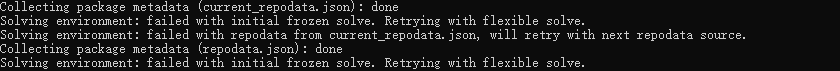

最新版 conda 使用报错的解决办法
The solution to the error when using the new version of conda
Changelog
date: 2020-04-03
Changed
- change categories
1. 引言
最近在更新 conda 后, 使用 conda install安装包时, 会报 Solving environment: failed with initial frozen solve. Retrying with flexible solve. 的错误.

最后在 GitHub 发现了解决办法1,
2. 问题复现
这个错误在 conda 4.7.12 和 最新的 conda 4.8.2 中均有出现。( Windows )
使用 conda install安装其他包时, 将会出现上述问题。然而在创建一个环境时可以正常安装（例如：conda create -n tensorflow_env tensorflow）。
3. 解决办法
目前解决方案有两个，将 conda 降级、或使用 pip。
3.1 将 conda 降级
1 | # 设置 conda 试允许降级 |
3.2 使用 pip
由于 pip 和 conda 不兼容，建议在单独的环境下使用 pip。不要与 conda 混用。
GitHub 有人反映降级 conda 并不能解决问题 :)
建议跟踪此 issue https://github.com/conda/conda/issues/9367